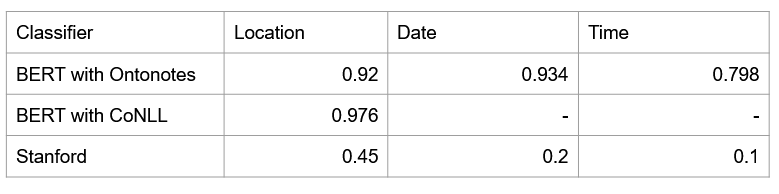

Natural Language Processing has advanced significantly in the last decade. Advanced models, such as transformers and attention networks, have made human language recognition simpler. This work is part of my University research project done in colloboration with 5 students including myself. Inspired by then recent social media movement, #MeToo, we built a chatbot to assist survivors of sexual harassment cases (designed for the city of Maastricht but can easily be extended to other regions). We had two main motivations, properly assist survivors of such events by directing them to appropriate institutions that can offer them help and increase the incident documentation so as to gather more data about harassment cases which are currently under reported.
Lets take a look at the pipeline of the project and what it can do. We can break down
the project into three main machine learning/deep learning
sub tasks.

- Harassment type identification (treated as a classification problem)
- Spatio-temporal information extraction (treated as Named Entity Recognition problem)
- Dialogue with the users (treated as a slot-filling based chat-bot).
Data
Let's take a look at the data. The first sub task is to classify whether a input sentence from a user is related to harrasment or not. So it is treated as a binary classfiication. For the positive class, the data was generously given to us upon request from the folks at safeCity. They are a NGO based in India that offers help to women in an anonymized manner. The positive class is made of strings from real world data submitted my women who endured harrasment. There are ~12K labeled harassment cases including ogling, catcalling, groping, stalking and more that are stored in an anonymized table format. As for the negative cases, random text from text datasets like IMDB and good reads reviews were used. Now the second part of the classification is to classify what type of harrasement so that specific responses can be created. Below word cloud shows the most frequent words from the dataset.

Classification
To summarize, the text classification block has to clasify the input into one of these four data classes and the first one is mutually independant of the others and always peformed first.
- Harassment issue or not.
- Verbal abuse.
- Physical abuse.
- Non-verbal abuse.
Logistic regression proved to be the fastest and most reliable method to classify this type of data. Another important factor in NLP is the quality of the word embeddings. At the time of writing this article, TF-IDF and Doc2Vec were considered state of the arts. The resulting feature vectors from the both the methods were used in a Logistic regression classifier and the results are shown in the image below. The difference between them were of low disparity, so we decided to ensemble them in the chatbot.
Named Entity recognition
Named entity recognition is the next subtask. NER is generally used to extract information such as person names, organizations, locations, medical codes, time expressions, quantities, monetary values, percentages, etc. In our case, we needed to extract Location, Date and Time from a given input. Luckily for use, in 2019, google released their state of the art transformer architecture called BERT which outperformed classical machine learning approches like NLTK and spacy libraries. We used three methods for fine tuning with data from WikiData and chose the best one among them.
Chatbot
Now onto the final step of the pipeline, where all the different models are accumulated together and the chatbot acts like the medium for input and output data. Initially, we wanted to create our own chatbot from scratch using RASA framework, but given that it is a university project and there are time constraints, we settled to used the telegram wrapper where our models can be hosted locally and on the internet.
The chatbot operates in a slot filling basis. As an example,lets consider a very
small dialogue exchange
User: I was walking down in Frankenstraat yesterday evening and a
bunch of mean were staring at me!
Input to deep learning models in the back end I was walking down in
{location} {time} and {harassment type}
-harrasment type: A bunch of men were staring at me
-time: yesterday
-location: Frankenstraat
BOT: I am sorry that happened to you! suggest appropriate {action}
along with information like {helpline phone number}.
Conclusion
Classification of the harassment type was successful by reusing data from SafeCity and combining two models: a TF-IDF with up to 3 n-grams and Doc2Vec with Distributed Bag of Words (DBOW) with a Logistic Regression classifier. Results gave an over 80% accuracy for identification of harassment type. Named entity recognition (NER) was implemented by finetuning BERT state-of-the-art model delivered very accurate results for location and dates (90%) and very satisfactory results for time events (80%). Finally, a slot-filling based chatbot was implemented so as to encapsulate the classification and NER frameworks into the dialogue flow.
Initial results of this work are really encouraging into ways that survivors of harassment can be assisted by means of data science. However, there are many possible directions for improvement in the future. The research paper was accepted at ECMLPKDD-2019 conference and our team also won the best paper award at the social good workshop which is a part of the conference. We set out to explore the possibilites of leveraging machine learning to do something good by applying in a real world problems and our work proved to a great proof of concept. We heard news that another team of students has picked up where we left and that the model is also being funded by the city of maastricht's municipality. You can use our chatbot with this link. Please note, we have handed over the maintanence of the website to our supervisor, so it might be down at times too. If you are further interested in this project please take a look at our detailed report here.